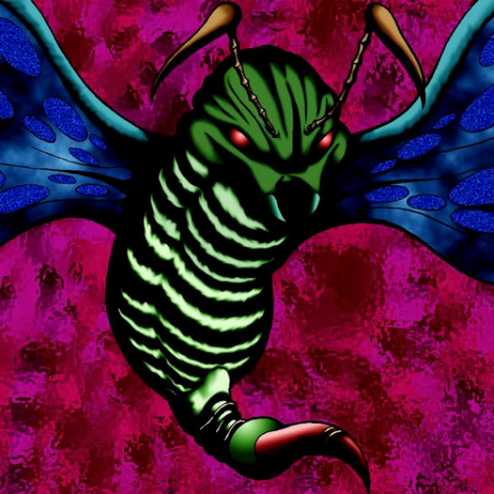

Gale Dogra

Description: "While this card is face-up in the defense position, all enemy monsters are reduced 100 points each turn."
STATS
ATK: 650
DEF: 600DECK COST
Deck Cost per Card: 18EFFECT NOT IMPLEMENTED
Fusion List (2 Possible Fusions)
- Gale Dogra + Queen's Double = Cockroach Knight
- Gale Dogra + Swordsman from a Foreign Land = Cockroach Knight